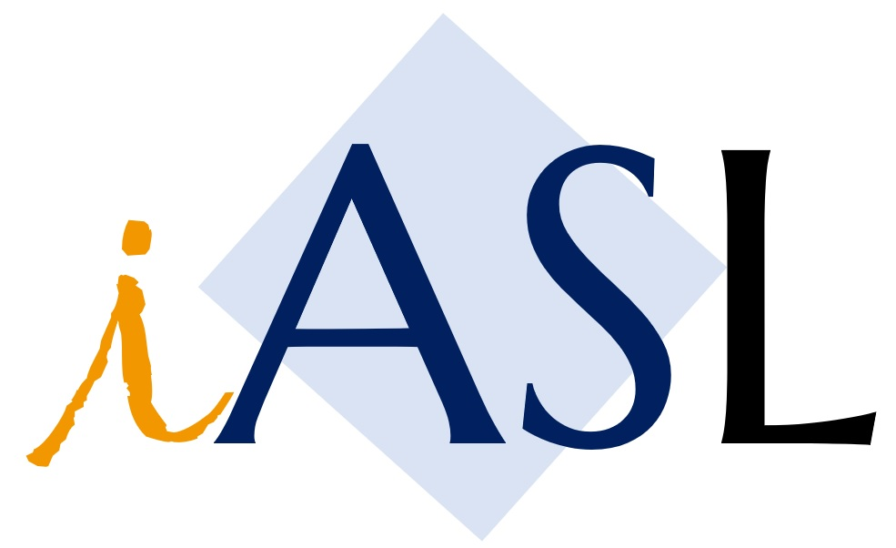
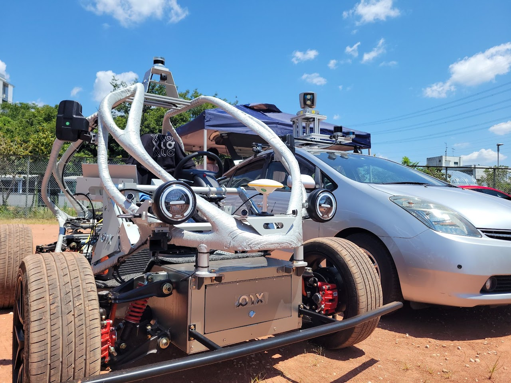
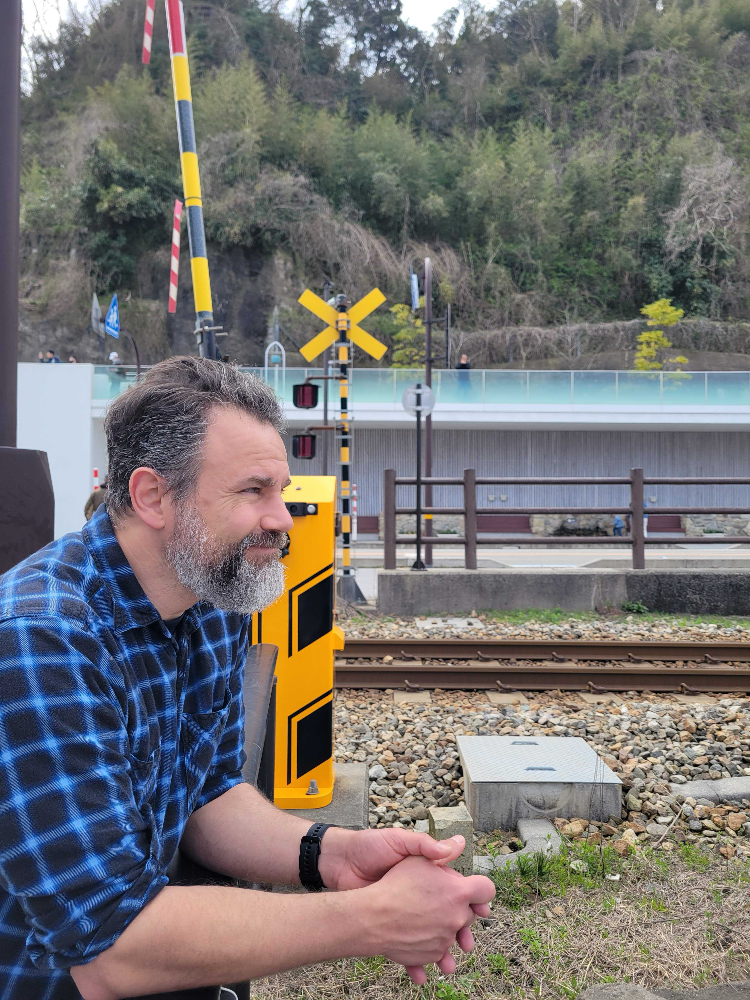
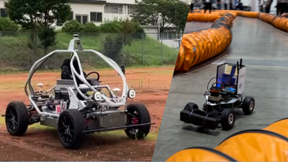
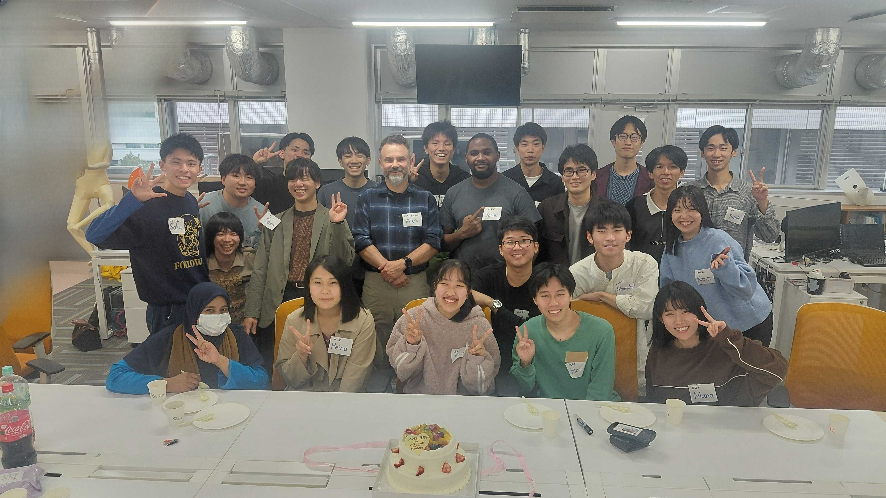

Intelligent Autonomous Systems Laboratory

Intelligent Autonomous Systems Laboratory
アレックス研究室は、2022年11月に岐阜大学工学部 電気電子・情報工学科（情報コース）に設立されました。
自動運転ソフトウェア「Autoware」を活用した実験をはじめ、AIによる自動船舶や自律ロボットの研究を行っています。また、人間社会との関わり（ヒューマンインターフェース）の調査や、デジタルツインの検証環境構築、高度なセンシング技術の開発にも取り組んでいます。
研究室の目標は、AIとロボティクスを活用して、より安全で効率的な自律システムを社会に実現することです。私たちは、最新の技術を学びながら、実践的なプロジェクトに取り組んでいます。


みなさん，こんにちは．私は岐阜大学 准教授のカルバヨ アレックサンダーです。私は筑波大学知能ロボット研究所にて工学博士号を取得し, その後,北陽電機株式会社にてLiDARの研究開発に従事しました。
そして現在,私は知能ロボットのセンシングや自律運転，それに関連する課題について取り組んでいます。こうした課題を取り組む中で、福祉課題などの地域問題解決にも貢献したいと考えています。

センシングと認識技術を基盤に、車両自らが判断し行動する「E2E（End to End）自動運転」や、車と人が協調する運転支援システムなど、モビリティの知能化を追求しています。 さらに、大規模言語モデル（LLM）をはじめとする最先端AIの応用や、 車と社会をつなぐ「V2X（Vehicle to Everything）通信」、 現実世界を仮想空間に再現してシミュレーションを行う「デジタルツイン」まで、 モビリティの未来を形成する幅広い技術領域に挑戦しています。

研究室には、博士課程2名(D1: 2名)、修士課程10名(M2: 4名, M1: 6名)、学部生5名(B4: 5名)、研究生1名の計18名が在籍しており、日々交流しながら研究に取り組んでいます。
研究室主催のイベントも多く学年の垣根を越えた交流が自然に生まれるのが魅力です。